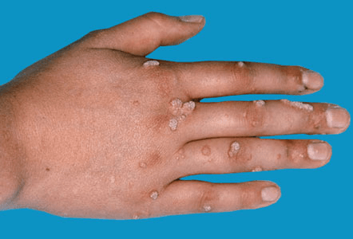

Warts are raised bumps on your skin caused by the human papillomavirus (HPV). Warts have plagued humans for thousands of years — they have been discovered on 3,000-year-old mummies and were mentioned by Shakespeare. Although warts generally aren’t dangerous, they are ugly, potentially embarrassing, and contagious. They can also be painful.

You must use these products every day, often for a few weeks. They’ll work best if you soak the wart in water for about 15 minutes before you apply the treatment.
Some people have had success treating warts with duct tape. The process involves covering the wart with a small piece of duct tape for several days, then soaking the wart, and, finally, rubbing the wart to remove the dead skin. This approach can take several rounds of treatments to work.
If your wart doesn’t respond well to at-home treatments, your doctor may be able to help. Remember, always see your doctor if you have diabetes and have warts on your feet.
Your doctor may freeze your wart with liquid nitrogen. This can be a bit painful, but usually works well. More than one treatment may be required. Freezing causes a blister to form under and around your wart. This lifts the wart away from the skin within about a week.
Surgery is usually only considered if a wart hasn’t responded to other treatments. Your doctor can cut away your wart with a surgical knife or burn it with electricity. You’ll need to receive a shot of anesthetic first, and these shots can be painful. Surgery may also cause scarring.